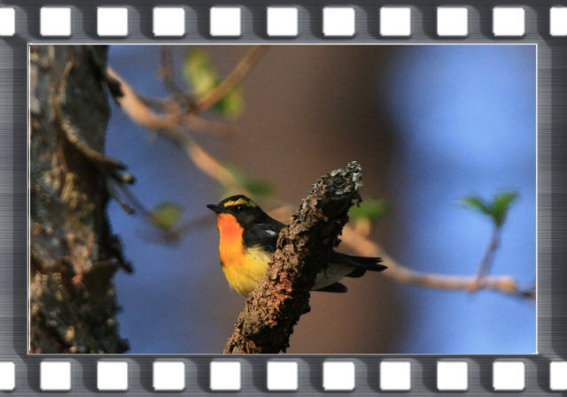
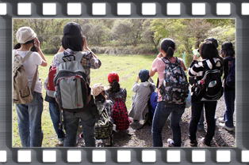
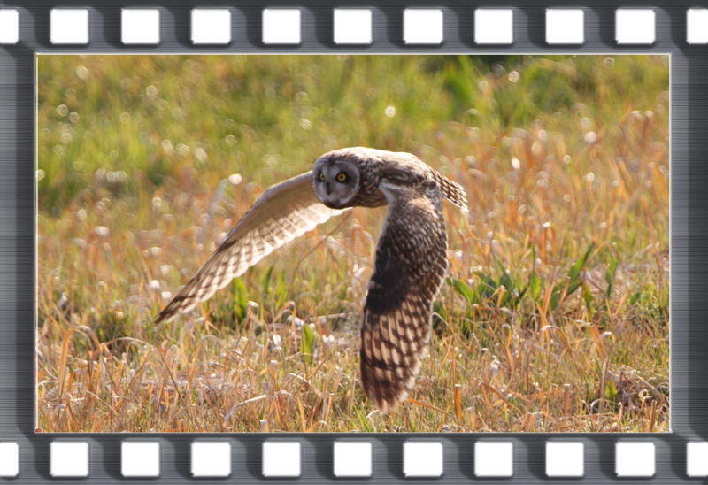
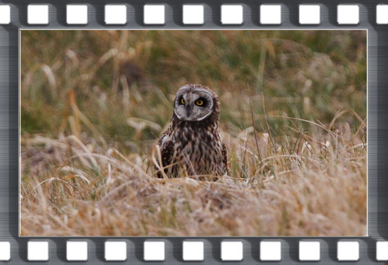
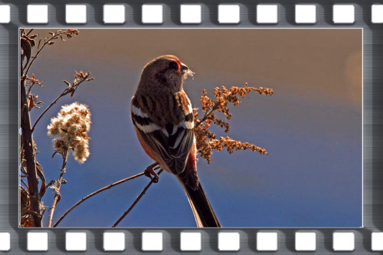
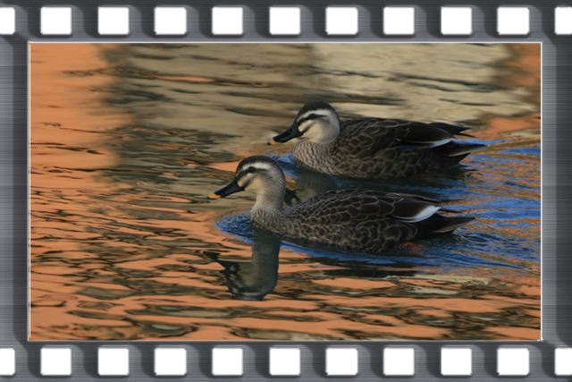
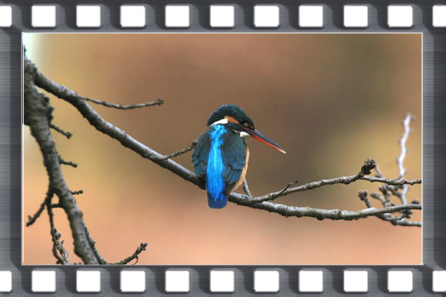
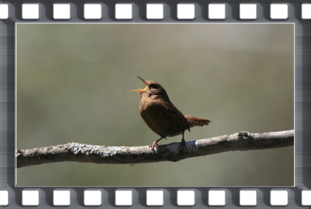

自然劇場は演劇の練習と別物の活動ではなく、活動の一部だと考えてもいるのです。
※掲載された写真はその時撮影したものでないものが含まれています。その時の自然劇場で子どもたちがどのような自然に触れたのかを伝えるには、写真が有効だと思いその時観察したイメージに近い写真を使いました。
写真はすべて斉藤俊雄が撮影したものです。私たちはこのような活動の中で、感性を育んでいます。
第26回自然劇場(久喜市立久喜中学校) 2011年5月8日(日) オオルリを探して日光へ
新１年生１０人を迎え、今年も日光へ。オオルリは大サービスで何度も登場してくれた。今まであいたいと思いながらあえなかった珍しい植物とも出会うことができた。 


詳しい記録は次をクリック▲
第25回自然劇場(久喜市立久喜中学校) 2010年5月8日(土) ルリと出会いに日光へ
新１年生を迎えて先日関東大会で上演した『七つ森』に登場するオオルリを見に行く。オオルリは電線に止まる大サービス。最後はキジのつがいをじっくり見られた。 


詳しい記録は次をクリック▲
第24回自然劇場(久喜市立久喜中学校) 2010年3月6日(土) フクロウに会いに
冬に日本に渡ってくるフクロウ・コミミズクが学校の近くにたくさん訪れていたので、保護者会終了後、保護者の協力を得て見に行く。  
詳しい記録は次をクリック▲
第23回自然劇場(久喜市立久喜中学校) 2010年2月14日(日) タカを見つけて多々良沼
『七つ森』に登場するタカを探しに多々良沼へ。トビ、オオタカ、チョウゲンボウ、ノスリの４種類のタカを見ることができた。またアカゲラという大型のキツツキ、見られると思っていなかった赤い鳥ベニマシコも見ることができた。 


詳しい記録は次をクリック▲
第22回自然劇場(久喜市立久喜中学校) 2010年1月30日(土) 鳥・入門
久喜中学校での初めての自然劇場。久喜菖蒲公園で入門コースの探鳥会。たくさんの種類のカモ、サギ類、カンムリカイツブリ、ジョウビタキなど見ることができる。 


詳しい記録は次をクリック▲
第21回自然劇場(久喜市立太東中学校) 2002年3月31日(日) カワセミを探して
今回はカワセミ探しの太東中演劇部最後の自然劇場。最後の最後で大きなドラマが待っていた。


詳しい記録は次をクリック▲
第20回自然劇場(久喜市立太東中学校) 2002年3月3日(日) 群馬県多々良沼
オオハクチョウ、コハクチョウ、コブハクチョウの３種類の白鳥を見ることができる(ただしコブハクチョウは野生ではないが)。その他キツツキのドラミングの真似をするカラスやメジロの鳴き声をまねるモズなど面白い出し物もあった。
カラスにモビングされるオオタカが長い時間見られたのも収穫だった。


詳しい記録は次をクリック▲
第19回自然劇場(久喜市立太東中学校) 2001年5月12日（土） 日光小倉山森林公園
オオルリを求めて日光小倉山森林公園に。目的のオオルリをじっくり観察できる。その青に魅了された。キビタキの黄色も美しいものだった。鳥だけでなくリスとも出会えた。自然の美を十分堪能した自然劇場であった。


詳しい記録は次をクリック▲
第18回自然劇場(久喜市立太東中学校) 2001年4月8日(日) 久喜市古利根川周辺
生態系保護協会久喜支部の自然観察会と合流してカワセミを求めて歩いたが、今日もカワセミには出会えなかった。しかし、春の草花とたくさんで会うことができた。


詳しい記録は次をクリック▲
第17回自然劇場(久喜市立太東中学校) 2001年3月27日(火) 蓮田市黒浜(東埼玉病院周辺〜黒浜沼)
キジを求めて春の探鳥会に。自然劇場では初登場のマヒワの集団を見ることができた。キジも♂が悠然と畑の中を歩いていた。今回の自然劇場は五感が研ぎ澄まされる場となったと感じている。


詳しい記録は次をクリック▲
第16回自然劇場(久喜市立太東中学校) 2001年2月17日（土） 久喜市・昭和池（久喜菖蒲公園）
新しい代での最初のそして新世紀最初の（大袈裟）自然劇場。生態系保護協会の冨田さんが取材に来てくださった。メジロにわき、関東地方では珍しいトモエガモにわき。最後は埼玉県の鳥シラコバトが出現した。全部で三十五種の鳥が見られた、上出来だろう。


詳しい記録は次をクリック▲
第15回自然劇場(久喜市立太東中学校) 2000年5月6日(日) 太東中周辺
新１年生を迎えて太東中周辺の自然を探しに出かける。さまざまな春の花を見ることができる。途中ヒバリの巣を発見。

詳しい記録は次をクリック▲
第14回自然劇場(久喜市立太東中学校) 1999年11月21日(日) 春日部市内牧公園
古利根川でユリカモメ、セグロカモメ、ウミネコの三種類のカモメが1羽ずつ並んで佇んでいた。美しいムラサキシジミに出会う。目的のタゲリは振られる。生徒達はアスレチック広場の滑り台で大はしゃぎ。


詳しい記録は次をクリック▲
第13回自然劇場(久喜市立太東中学校) 1999年2月20日(土) 蓮田市黒浜(東埼玉病院周辺〜黒浜沼)
黒浜に冬鳥を求めて出かける。突然のクイナの出現(有名なヤンバルクイナの仲間)。最後はオオタカが冬空を舞った。


詳しい記録は次をクリック▲
第12回自然劇場(久喜市立太東中学校) 1998年12月13日(日) 久喜市香取公園周辺
生態系保護協会久喜支部の方とともに自然観察に。８種類のカモが見られる。トイザラス横の堀で演劇部副部長がカワセミを発見する。市街地の中でカワセミを見る感動を味わう。 
詳しい記録は次をクリック▲
第11回自然劇場(久喜市立太東中学校) 1998年5月30日(日) 日光戦場ヶ原
夏の公演「生命の交響曲」の世界を体験するために日光戦場ヶ原に出かける。湯の湖についたとたんオオルリの囀り。途中コルリが姿を顕わす。キビタキ、ミソサザイなどの山の鳥を楽しむ。ツツジをはじめとする花も美しかった。 


詳しい記録は次をクリック▲
第10回自然劇場(久喜市立太東中学校) 1998年5月16日(土) 蓮田市黒浜(東埼玉病院周辺〜黒浜沼)
日光に行くための練習として黒浜沼に出かける。双眼鏡で見るには技術が必要。ここではコアジサシのダイビングが見られた。カワセミよりも飛び込みかたが派手。ダイビングのたびに歓声が上がった。

詳しい記録は次をクリック◆
第9回自然劇場(久喜市立太東中学校) 1998年4月18日(土) 久喜市太東中周辺
太東中周辺に春の植物を求めて歩く。３年生はかなりの知識を得ている。のどかなひとときであった。

詳しい記録は次をクリック◆
第8回自然劇場(久喜市立太東中学校) 1998年3月14日(土) 岩槻 城址公園〜岩槻公園
岩槻公園に探鳥に出かける。目的は自分が先日見たルリビタキ。生徒にとって青い鳥は憧れの鳥。しかし、振られた。ただ、別の青い鳥カワセミはたっぷり見られる。雄と雌の識別も楽しめた。

詳しい記録は次をクリック◆
第7回自然劇場(久喜市立太東中学校) 1998年2月21日(土) 蓮田市黒浜(東埼玉病院周辺)
黒浜の東埼玉病院周辺の林に探鳥に。アカゲラ(大型の赤い部分が鮮やかなキツツキ)が出現する。キジの♂も草原からから飛びだしその大きさと美しさに歓声が上がる。

詳しい記録は次をクリック◆
第6回自然劇場(久喜市立太東中学校) 1998年1月31日(土) 久喜市昭和池
久喜市昭和池にカモ等の水鳥を求めて探鳥に出かける。パンダの模様に似ているミコアイサ(別名 パンダガモ)に出会える。そのユニークな顔に「かわいい」「かわいい」の連呼。このときの観察会はNHKで紹介された。ただし、冬季オリンピックのジャンプ日本団体のあの感動的な優勝によって夕方６時半の放送が、朝５時半となった。

詳しい記録は次をクリック◆
第5回自然劇場(久喜市立太東中学校) 1997年11月8日(土) 春日部内牧公園
田園の貴公子タゲリに会いに出かける。幸い、タゲリの集団を見つけることができた。こんな美しい鳥がこんな身近にいるんだと思える鳥です。


詳しい記録は次をクリック●
第4回自然劇場(久喜市立太東中学校) 1997年5月31日(土) 白岡
生徒達の「カワセミが見たい」というリクエストに、カワセミが巣作りをしている秘密の場所に連れて行く。久喜市と白岡町の境で交通量も多く、「こんなところにカワセミが」という場所。コバルトブルーの飛翔に歓声が上がる。

詳しい記録は次をクリック●
第3回自然劇場(久喜市立太東中学校) 1997年4月29日(火) 春日部内牧公園
春の植物を探しに内牧公園に出かける。そこで発見したのはなんとキンラン。身近なところにも素晴らしい自然が残っている。生徒はコゲラというキツツキを発見。目の前で木をつついている姿に、思わず。「ニクマンで、ニクマンで見ました！」。演劇部の歴史に残る名言の誕生だ。埼玉県の鳥シラコバトも見られた。


詳しい記録は次をクリック●
第2回自然劇場(久喜市立太東中学校) 1997年3月28日(日) 蓮田黒浜周辺(東埼玉病院周辺〜黒浜沼)
自然劇場第２回。１回目トラツグミやアオゲラが見られたので期待が高まる。この日は弁当を持って１日探鳥。日本最小の鳥キクイタダキが見られる。沼ではタシギとコチドリを楽しんだ。全部で３６種も見られる、楽しい「自然劇場」だった。

詳しい記録は次をクリック●
第1回自然劇場(久喜市立太東中学校) 1997年2月15日(土) 蓮田黒浜周辺(東埼玉病院周辺)
このときから今まで行っていた自然観察会の名称を「自然劇場」とする。記念すべき第一回「自然劇場」。その期待に応えトラツグミが出現してくれた。トラツグミは鵺(ぬえ)と呼ばれるとても魅力的な鳥。この鳥を見ることは決して簡単ではない。アオゲラという大型のキツツキもも現れた(このキツツキは日本にしか生息していない)。そこは素晴らしい自然の劇場だった。

詳しい記録は次をクリック●